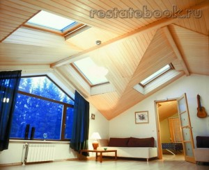
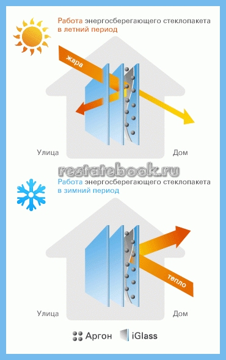

Что же такое энергосберегающий дом

В виду того, что оплата за теплоносители и энергию составляет львиную долю расходов по содержанию любого здания, среди жителей нашей страны все большей популярностью пользуется концепция энергосберегающего дома. В ее основе лежат принципы энергетической экономности здания, которые включают в себя сразу несколько строительных решений:
- Расположение и форма здания;
- Тепловая изоляция здания;
- Система отопления с высоким КПД.
Остановимся на каждом из них поподробнее.
Что такое энергосберегающий дом?
Расположение и форма здания
При расположении энергосберегающего дома следует учитывать множество факторов. Защититься от холодных ветров, дующих в доминирующем направлении, могут помочь соседние здания, неровности местности или высокие деревья, а грамотное расположение дома относительно сторон света позволит максимально использовать солнечную энергию. Очевидно, что с южной стороны дома должны располагаться помещения с большими окнами, тогда как с северной окна должны по возможности отсутствовать или быть маленькими.

Часто при проектировании дома учитываются так называемые «буферные зоны», роль которых выполняют зимние оранжереи, теплицы и лоджии.
Тепловая изоляция здания
Важнейшую роль в теплоизоляции дома играет конструкция наружных стен, которые подразделяются на однослойные и многослойные. В однослойных стенах используется один материал – в основном это либо пористая керамика, либо ячеистый бетон. В многослойных стенах используется несколько материалов, причем каждый из них выполняет свою функцию. Внутренний слой стены (он же несущий) несет повышенную нагрузку и выполняется из прочного материала (кирпича или бетона). Средний слой выполняет теплоизоляционные функции, поэтому состоит из материалов с низкой теплопроводностью – минеральной ваты или пенопласта. Наружный слой выполняет декоративные и защитные функции, поэтому в этом случае используются такие материалы, как пластик или дерево.
Еще один немаловажный момент в теплоизоляции дома – окна. Сегодня для обеспечения повышенной теплоизоляции используются многослойные окна, которые заполнены либо воздухом, либо инертным газом. Также в большинстве современных стеклопакетов используются стекла со специальным покрытием, которое задерживает тепловое излучение.

В обычных рамах этот показатель может достигать значения 1.5 Вт/(м2*К), а при использовании энергосберегающих рам коэффициент теплопроводности можно понизить до 0.7.
Свою роль в минимизации теплопотерь энергосберегающего дома играет герметичность окон. В современных конструкциях используются специальные аэраторы, которые способны автоматически регулировать приток свежего воздуха в зависимости от уровня влажности внутри помещения.
Так, при отсутствии в доме жильцов (что сразу же ведет к понижению влажности), аэратор снижает приток воздуха и наоборот.
Также теплопотери можно уменьшить при помощи специальных жалюзи и ставен. Например, в ночное время суток, когда температура воздуха неизбежно понижается, специальные роллеты могут уменьшить теплопотери оконных проемов на 40 и более процентов.
Системы отопления
Грамотно устроенная система отопления и нагрева воды может существенно снизить затраты на обогрев дома. Ключевую роль в этом играют солнечные коллекторы, которые способны нагревать воду вплоть до температуры кипения. В летнее время солнечный коллектор способен полностью обеспечить дом горячей водой, а в осенне-зимний период с помощью него можно обеспечить до 60% потребностей дома в горячей воде и до 30% энергии на отопление. В условиях холодных зим очень эффективны так называемые вакуумные коллекторы, которые способны обеспечить температуру нагрева воды более 100C.
Оставшуюся потребность энергосберегающего дома в обогреве могут восполнить «теплые полы», которые способны обеспечить равномерное распределение температур воздуха по высоте. Теплоносителем в таких полах могут быть либо трубы с горячей водой, либо электрические кабеля. В последнее время большой популярностью пользуются инфракрасные полы, которые используют в качестве теплоносителя специальную наноуглеродную пасту. В отличие от других систем, в таких полах передача тепла осуществляется без потерь энергии, а значит и их эффективность заметно выше.